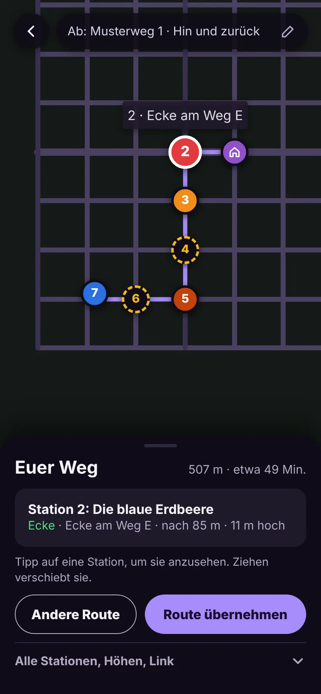
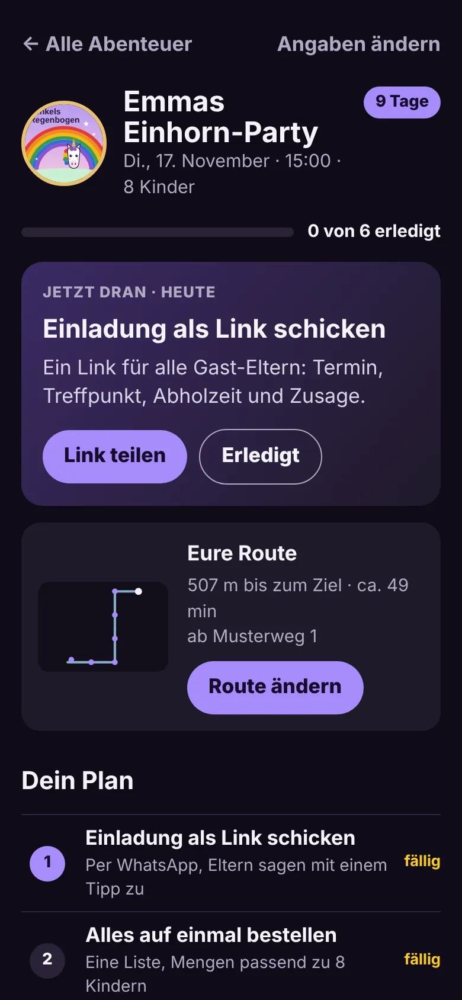
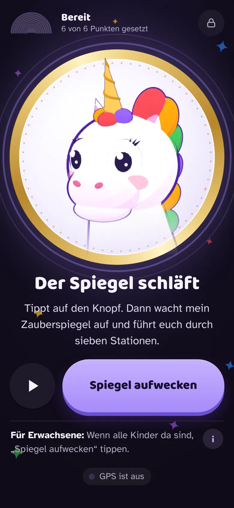
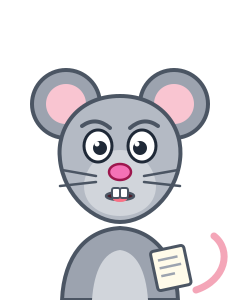
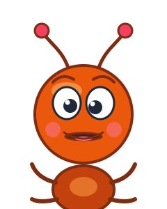
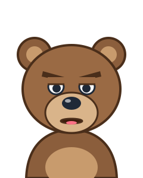

Eine Schatzsuche, die in eurer Straße spielt
Für Kinder von 3 bis 6: Funkel, das Einhorn, spricht aus dem Zauberspiegel und führt die Geburtstagsgäste von Station zu Station – mit wenigen Klicks für euer Kind und eure Umgebung eingerichtet, statt einer Box, die überall gleich ist.
Route für eure Straße planenOhne Konto ausprobieren
So einfach geht's



Bilder aus der App mit Beispieldaten
Wählt euren Erzähler
Funkel erzählt die Geschichte. Durch die Stationen begleitet euch eine von sechs Figuren. Hört rein und sucht aus.
- Professor KakapupsPupst und legt ein Häufchen.

Rudi, die ratlose RatteTotal verplant, sucht ständig seinen Zettel.
Alfonso, die alberne AmeiseKichert und albert herum.
Bruno, der brummige BärBrummt, ist aber eigentlich lieb.- Charly, der coole ClownSupercool, hupt mit seiner Tröte.
- Dagobert, der dusslige DachsStolpert und bringt alles durcheinander.
Was ihr bekommt
- Die Geschichte spielt dort, wo ihr wohnt – nicht auf einer Karte aus der Schachtel.
- Der Zauberspiegel spricht alle Texte. Die Kinder müssen nicht lesen können.
- Bei Regen lässt sich die Geschichte auch zu Hause spielen.
- Der Vorausgeher sieht auf der Karte genau, was wohin kommt.
Im Vergleich
| Schatzweg | Box oder selbst basteln | |
|---|---|---|
| Wo gespielt wird | In eurer Umgebung, auf echten Orten | Box: überall gleich · Selbst basteln: ihr sucht die Orte |
| Vorbereitung | Wenige Klicks und eine Einkaufsliste | 2–3 Abende basteln oder eine Box für 30–50 € |
| Am Partytag | Der Zauberspiegel erzählt und führt | Ein Erwachsener liest Rätsel vor |
| Bei Regen | Auch zu Hause spielbar | Plan B selbst überlegen |
Fragen von Eltern
Brauche ich ein Konto?
Nein. Hörprobe, Route planen und Party anlegen gehen ohne Konto. Erst wenn ihr Einladung oder iPad-Link teilt, meldet ihr euch mit einem Code per E-Mail an, ohne Passwort.
Brauche ich ein besonderes Gerät?
Ein Handy oder Tablet mit Mobilfunk reicht. Der Bereit-Check prüft vorher Ton, GPS, Akku und Offline-Speicher.
Klappt das GPS wirklich?
Stationen öffnen nur bei sicherem Signal. Sonst fragt der Spiegel, und ein Erwachsener tippt „Wir sind da“.
Unsere Kinder können noch nicht lesen.
Müssen sie nicht: Der Zauberspiegel spricht alle Texte.
Was brauche ich an Material?
Die Einkaufsliste zeigt alles mit Links. Vieles davon sind Mitgebsel, die ihr zum Geburtstag ohnehin kauft.
Muss vorher jemand die Stationen vorbereiten?
Ja, ein Vorausgeher legt die Dinge hin. Die App zeigt ihm auf der Karte, was wohin kommt.
Wie lange dauert die Schatzsuche?
Etwa 50 Minuten plus Heimweg, mit 7 Stationen.
Ohne Konto ausprobieren